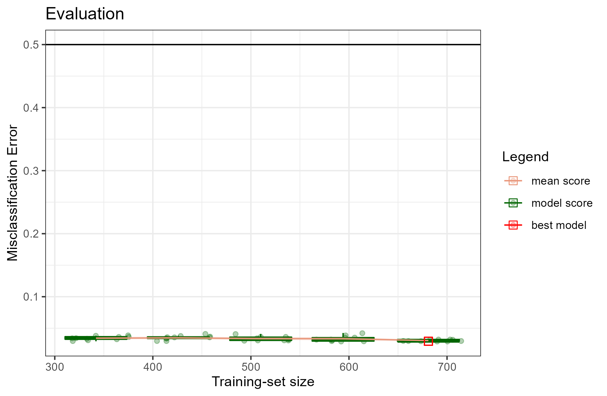
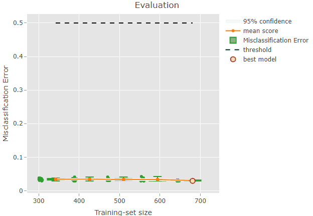
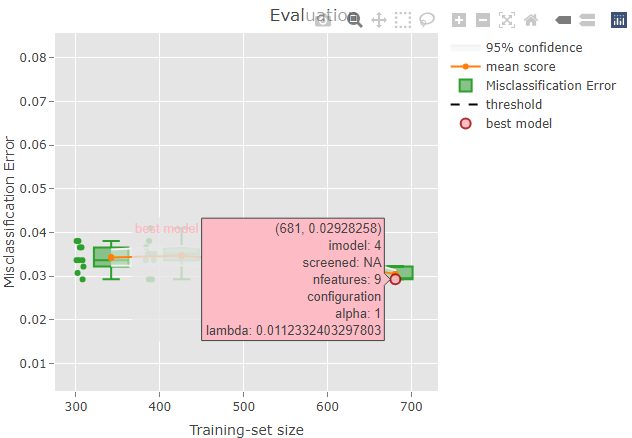

Introduction
renoir is a package that evaluates a chosen machine learning methodology via a multiple random sampling approach spanning different training-set sizes.
renoir has been developed thinking about a teaching/learning abstraction. There are two main actors in the renoir framework: the learner, and the evaluator.
- The learner represents the learning method under assessment and is
linked to the
?Learnerclass. - The evaluator is responsible for the evaluation procedure, i.e. the
assessment of the performance of the learner via multiple random
sampling, and it is related to the
?Evaluatorclass.
The example in the Quick Start will help you in familiarizing with these concepts.
Quick Start
In this section we will briefly go over the main functions, basic operations and outputs.
First, we load the renoir package:
For this brief example, we decided to show the functionality of renoir for a classification problem. Let us load a set of data for illustration:
data(binomial_example)The command loads an input matrix x and a response
vector y from a saved R data archive.
Now we want to set a seed for the random number generation (RNG). In
fact, different R sessions have different seeds created from current
time and process ID by default, and consequently different simulation
results. By fixing a seed we ensure we will be able to reproduce the
results of this example. We can specify a seed by calling
?set.seed.
#Set a seed for RNG
set.seed(
#A seed
seed = 5381L, #a randomly chosen integer value
#The kind of RNG to use
kind = "Mersenne-Twister", #we make explicit the current R default value
#The kind of Normal generation
normal.kind = "Inversion" #we make explicit the current R default value
)As reported in the Introduction, the main
actors in renoir are the ?Learner and
?Evaluator classes, and these are also the main elements we
need to set up before running our analysis.
Supported Methods
Learning Methods
Let us start with the ?Learner. A ?Learner
is a container for the different essential elements of the learning
methodology we want to evaluate. In this example, we will focus on just
three elements, i.e. the learning procedure, the sampling approach, the
performance metric.
As a first step, we need to select a learning methodology to
evaluate. A list of supported methods is available through the
?list_supported_learning_methods function call.
#list methods
learning.methods = list_supported_learning_methods()
#print in table
knitr::kable(x = learning.methods)| id | method | default_hyperparameters |
|---|---|---|
| lasso | generalized linear model via L1 penalized maximum likelihood (lasso penalty) | lambda |
| ridge | generalized linear model via L2 penalized maximum likelihood (ridge penalty) | lambda |
| elasticnet | generalized linear model via L1/L2 penalized maximum likelihood (elasticnet penalty) | lambda, …. |
| relaxed_lasso | generalized linear model via L1 penalized maximum likelihood (relaxed lasso penalty) | lambda, …. |
| relaxed_ridge | generalized linear model via L2 penalized maximum likelihood (relaxed ridge penalty) | lambda, …. |
| relaxed_elasticnet | generalized linear model via L1/L2 penalized maximum likelihood (relaxed elasticnet penalty) | lambda, …. |
| randomForest | random forest | ntree |
| gbm | generalized boosted model | eta, ntree |
| linear_SVM | linear support vector machine | cost |
| polynomial_SVM | polynomial support vector machine | cost, ga…. |
| radial_SVM | radial support vector machine | cost, gamma |
| sigmoid_SVM | sigmoid support vector machine | cost, gamma |
| linear_NuSVM | linear nu-type support vector machine | nu |
| polynomial_NuSVM | polynomial nu-type support vector machine | nu, gamm…. |
| radial_NuSVM | radial nu-type support vector machine | nu, gamma |
| sigmoid_NuSVM | sigmoid nu-type support vector machine | nu, gamma |
| gknn | generalized k-nearest neighbours model | k |
| nsc | nearest shrunken centroid model | threshold |
For this example, we choose a generalized linear model via L1 penalty
(the lasso) as learning method. From the table, we can
see that the default hyperparameter of the method is
lambda.
Sampling Methods
Now we want to select a sampling procedure to use for the tuning of
the hyperparameter. A list of supported sampling methods is available
through the ?list_supported_sampling_methods function
call.
#list methods
sampling.methods = list_supported_sampling_methods()
#print in table
knitr::kable(x = sampling.methods)| id | name | supported |
|---|---|---|
| random | random sampling without replacement | stratification, balance |
| bootstrap | random sampling with replacement | stratification, balance |
| cv | cross-validation | stratification |
We can see how renoir currently supports three sampling scheme: random sampling with and without replacement, and cross-validation. They all provide options for a stratified approach, where a so-called ‘proportionate allocation’ is attempted to maintain the proportion of the strata in the samples as is in the population. On the other hand, only random sampling and bootstrap allow for balancing, meaning that the proportion of strata in the sample is attempted to be balanced.
For this example, we decided to tune the parameter via a stratified 10-fold cross-validation.
Scoring Methods
Finally, we want to choose a performance metric to assess the models
during the tuning. A list of supported scoring metrics is available
through the ?list_supported_performance_metrics function
call.
#list metrics
performance.metrics = list_supported_performance_metrics()
#print in table
knitr::kable(x = performance.metrics)| id | name | problem |
|---|---|---|
| mae | Mean Absolute Error | regression |
| mape | Mean Absolute Percentage Error | regression |
| mse | Mean-squared Error | regression |
| rmse | Root-mean-square Error | regression |
| msle | Mean-squared Logarithmic Error | regression |
| r2 | R2 | regression |
| class | Misclassification Error | classification |
| acc | Accuracy | classification |
| auc | AUC | classification |
| f1s | F1 Score | classification |
| fbeta | F-beta Score | classification |
| precision | Precision | classification |
| sensitivity | Sensitivity | classification |
| jaccard | Jaccard Index | classification |
We can see that the ?list_supported_performance_metrics
function reported the performance metrics for both regression and
classification problems. Let us refine our search by listing the
supported metrics for the binomial response type only. We
can do this by providing the resp.type argument to the
function as shown below.
#list metrics
performance.metrics = list_supported_performance_metrics(resp.type = "binomial")
#print in table
knitr::kable(x = performance.metrics)| id | name | problem |
|---|---|---|
| class | Misclassification Error | classification |
| acc | Accuracy | classification |
| auc | AUC | classification |
| f1s | F1 Score | classification |
| fbeta | F-beta Score | classification |
| precision | Precision | classification |
| sensitivity | Sensitivity | classification |
| jaccard | Jaccard Index | classification |
As expected, now only the metrics for classification problems are listed. Let us select the misclassification error (also called classification error rate) as performance metric.
So, overall we want to train a model with a lasso,
tuning the hyperparameter lambda via 10-fold
cross-validation and by using the misclassification error to assess the
performance of the models.
Main Elements
Learner
Since the lasso is a renoir built-in method, we can
create the related ?Learner object with a single
command.
#Learner
learner <- Learner(
#Learning method
id = "lasso", #generalised linear model with penalization
#Response type
resp.type = "binomial",
#Sampling strategy
strata = y, #by providing a strata we select the stratified approach
sampling = "cv", #cross-validation
k = 10L, #10-fold
#Performance metric
score = "class" #classification error rate
)Here above we used the simplified interface for the constructor, which is internally creating the different needed elements. If we want a fine-grained setting we can use the alternative interface as shown below.
#Learner
learner <- Learner(
#Trainer
trainer = Trainer(id = "lasso"), #generalised linear model with penalization
#Tuner
tuner = Tuner(
sampler = Sampler( #A Sampler contains info for the sampling strategy
method = "cv", #cross-validation
k = 10L, #10-fold
strata = y #by providing a strata we select the stratified approach
)
),
#Predictor
forecaster = Forecaster(id = "lasso"),
#Performance metric
scorer = Scorer(
id = "class", #classification error rate
resp.type = "binomial"),
#Select one model from a list
selector = Selector(id = "lasso"),
#Record features presence in a model
recorder = Recorder(id = "lasso"),
#Assign a mark to each feature
marker = Marker(id = "lasso")
)We are not going into details in this example, however you should
note that the sampling procedure is set up by creating an object of
class ?Sampler, while an object of class
?Scorer can be used to define the performance metric.
Evaluator
Now we need to set up the ?Evaluator. Objects of this
class contains the infrastructure for the evaluation procedure, which
mainly consists in the sampling strategy to adopt and the metric to
compute as estimate of the learning method performance. We can easily
set up the sampling strategy and the performance metric by creating
objects of class ?Sampler and ?Scorer,
respectively as shown below.
#Evaluator
evaluator = Evaluator(
#Sampling strategy: stratified random sampling without replacement
sampler = Sampler( #Sampler object
method = "random", #random sampling without replacement
k = 10L, #k repeats
strata = y, #stratified
N = as.integer(length(y)) #population size
),
#Performance metric
scorer = Scorer(id = "class"),
)Run Evaluation
Now that our main actors are set, we can run the analysis.
renoir provides a single command for this purpose, the
?renoir function. The essential required elements are a
?Learner, an ?Evaluator, the predictor matrix
x, the response variable y, and the response
type resp.type. Since our chosen learning method has one
hyperparameter (lambda), we also need to provide a
hyperparameters element, where we supply our sequence of
values that will be used during the tuning of the model.
#Renoir
renoirl = renoir(
#Learn
learner = learner, #a Learner object
#Evaluate
evaluator = evaluator, #an Evaluator object
#Data for tuning
hyperparameters = list( #the hyperparameter we
lambda = 10^seq(3, -2, length=100) #want to tune (for the
), #lasso is lambda)
#Data for training
x = x, #the predictor matrix
y = y, #the response variable
resp.type = "binomial" #the response type
)Explore Results
renoirl is a list containing two elements
of class ?Renoir, each providing all the relevant
information of the evaluation procedure. There are two elements because
renoir tries to select two different final configurations
during the tuning procedure: one configuration (called opt)
is the configuration having a mean performance during the chosen
repeated sampling procedure which is the optimum value when compared
across all the others, e.g. the configuration with the minimal
classification error rate; the other (called 1SE) is the
configuration resulting from the application of the so-called one
standard error rule which consists in selecting the most
parsimonious model having a mean performance within one standard error
from the optimum.
Summary Table
Various methods are provided for the ?Renoir object. For
example, we can produce a summary data.frame containing the
evaluation of the lasso across the different
training-set sizes by executing the ?summary_table
command:
#get the summary
s = summary_table(object = renoirl[[1]])
#print in table
DT::datatable(
data = s, #data to table
rownames = F, #don't show row names
options = list(
lengthMenu = list( #length of the menu
c(3, 5, 10), #set 3 as the minimum
c(3, 5, 10)), #number of shown entries
scrollX = T), #enable horizontal scrolling
width = "100%", #width size
height = "auto" #height size
)Visualization
We can also visualize the results by executing the ?plot
function. For example, let us plot the results of the evaluation when
considering the full set of data:
plot(x = renoirl[[1]], measure = "class", set = "full")
Each circle corresponds to the performance of a trained model. The mean performance metric (i.e. the mean misclassification error) computed from the model performance scores for each training-set size is shown as an orange line, while the related confidence intervals are drawn as bands around the mean. The red square represents the overall best model selected via an internal procedure: for example, when considering the misclassification error, renoir selects a potential best model by choosing the model with the minimal score across all the models fitted using the training-set size showing the lowest upper bound of the 95% CI. In this example, the plot shows a quite constant mean score around 0.03 across training-set sizes, indicating a good performance of the classifier.
To facilitate the inspection of the results, it is also possible to
produce an interactive plot by setting the argument
interactive = TRUE in the ?plot command.
plot(x = renoirl[[1]], measure = "class", set = "full", interactive = TRUE)The plot can now be zoomed by selecting an area:

Some information is also shown when hoovering over a plot element. For example, if you try to hoover over the red dot representing the best model you should be able to see something like this:

The top row indicates the position on the x and y axes: the selected
model has a training-set size of 681 and a misclassification error of
0.029. Please, note that the circles are slightly jittered from their
position for a clearer plot, but the values reported while hoovering are
correct. The second row is reporting the iteration index corresponding
to the model: in this case, the 4th model trained during the repeated
sampling procedure was selected as the best model. No supervised
screening was performed, and the model contains 9 features. Finally, the
value of lambda resulted from the tuning and that was used
to train the final model is reported.
Models
Now that we have identified a potential model of interest, we may
want to extract from the Renoir object. We can easily do it
by using the ?get_model command. It requires three
arguments:
- object: an object of class
Renoir - n: the sample size to consider
- index: index of the model to select
m = get_model(
object = renoirl[[1]], # Renoir object
n = 681, # Training-set size
index = 4 # Model index
)The model can now be used for further analysis. For example, we may want to use it for prediction.
newy = forecast(
models = m,
newx = x,
type = 'class'
)
table(newy)
#> newy
#> benign malignant
#> 446 237We could also be interested in the non-zero features of the model.
For this task, we can use the ?features command. The two
main arguments are:
- object: an object of class
TrainedorTuned - type: a string indicating whether to return
allfeatures or just the ones with non-zero coefficients (nonzero).
Global Features Importance
Finally, we might want to investigate the features importance across
all the models. We easily extract this by using the
?signature command and specifying the performance metric to
consider and the set.
featimp = renoir::signature(object = renoirl[[1]], measure = "class", set = "test")
featimp
#> V1
#> Cl.thickness 0.26128899
#> Cell.size 0.29092229
#> Cell.shape 0.31327881
#> Marg.adhesion 0.13525482
#> Epith.c.size 0.13296202
#> Bare.nuclei 0.31922395
#> Bl.cromatin 0.25066154
#> Normal.nucleoli 0.22569934
#> Mitoses 0.03448299